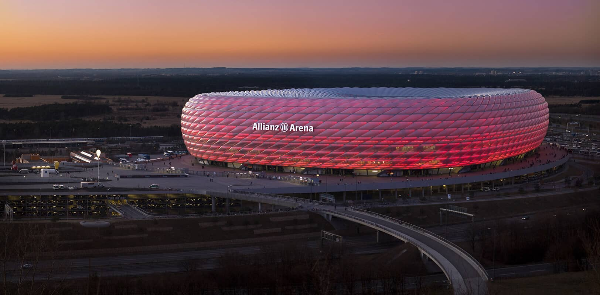

La Copa Mundial
El evento deportivo más importante del planeta.

Estadios históricos
Donde la historia del fútbol cobra vida.

Leyendas del Fútbol
Íconos que dejaron su huella en el mundo.
Explora más sobre los jugadores, partidos y estadios emblemáticos.
Ir al contenido